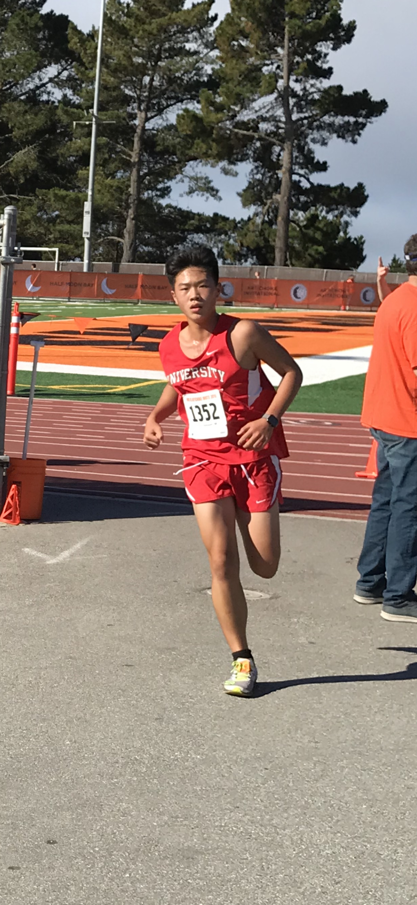
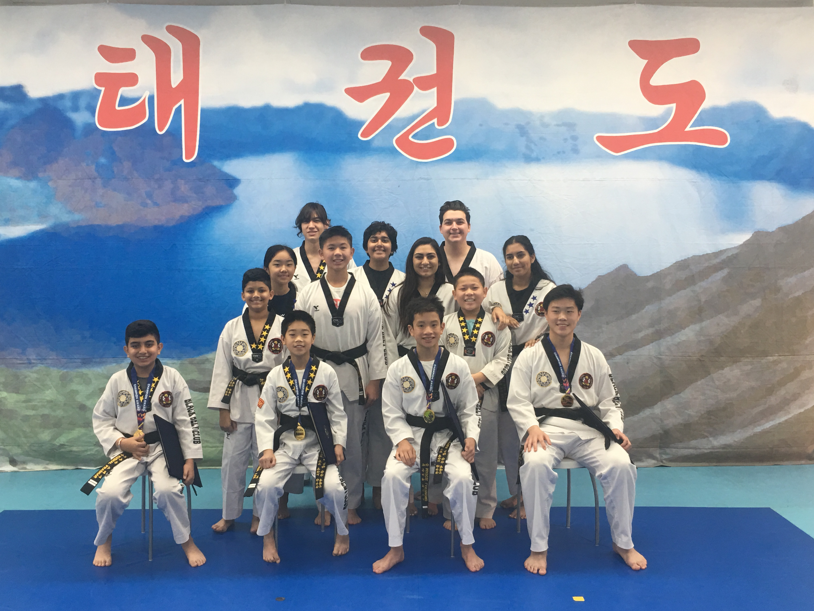
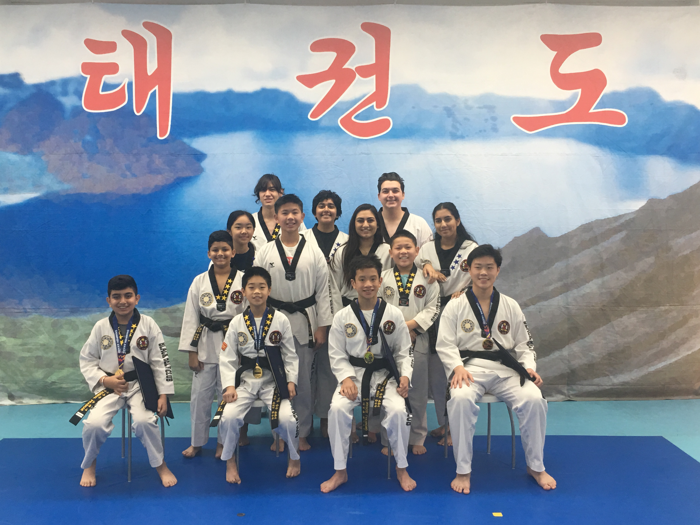

Uranus
Some fun facts about me:
- As a climber, I've redpointed up to 7c+ (5.13a) on top rope, 7c (5.12d) on lead, and 7C (V9) in bouldering. I've also onsighted up to 7b+ (5.12c) on top rope, 7b (5.12b) on lead, and 7B (V8) in bouldering. The video below is my send of a 5.13a project in the Movement SF gym:
- The longest distance I've ever run is seven miles.
- I'm a black belt in Taekwondo, certified by World Taekwondo.
- I'm a Music Teachers National Association (MTNA) level 10 pianist. I've played songs such as:
-
- Scherzo, Op. 31, No. 2 by Chopin
- Ballade pour Adeline by Clayderman
- Nocturne, Op. 9, No. 2 by Chopin
- Piano Sonata, Op. 27, No.2 by Beethoven
- Piano Sonata, Op. 13, No.8 by Beethoven
- Gymnopedie, No. 1 by Satie
- Odeon by Nazareth
- Praeludium und Fuge B - Dur, BWV 866 by Bach
- Paganini Etude No. 5 by Liszt
- Tarantella by Pieczonka
- Prelude in E Minor, Op. 28, No. 4 by Chopin
- Prelude, BWV 935 by Bach
- In the Forest, Op. 51, No. 4 by Rebikov
- The Storm, Op. 109, No. 13 by Burgmuller
- Waltz, Op. Post. by Chopin
- Valse Dramatico by Bober
- Fur Elise by Beethoven
- Sleeting by Heller
- I have a labrador retriever named Momo.


 
